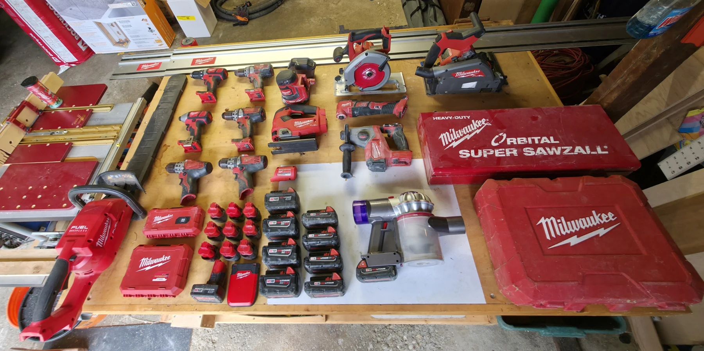

Makita palm router
Makita palm router
Personal workshop
THE TOOLS BEHIND THE WORK
The machines, hand tools, software, and workshop-made helpers I use. Browse the inventory, or open an entry for the story behind it.

The equipment and materials I use, grouped by their place in the work. Quantities are included where inventoried. Workplace machines are listed separately from my own equipment. Links marked Example illustrate a tool or material type; product-range links cover multiple models.
Find the drills, saws, sander, batteries, and adapted Dyson in the workshop photograph.
| Where to look | Identification |
|---|---|
| Upper / middle drill grid | 3 M18 drill/drivers, plus 1 M18 impact driver at middle-left |
| Bottom of the drill grid | 2 M12 drill/drivers |
| Center, behind the jigsaw | Random-orbit sander and dust collector |
| Center of bench | Top-handle FUEL jigsaw |
| Back, left of enclosed saw | Circular saw |
| Back-right / along bench rear | FUEL plunge / track saw and separate guide rails |
| Horizontal tool below circular saw | Oscillating multi-tool |
| Center-right, with side handle | FUEL rotary hammer |
| Lower-left, beside long scabbard | FUEL rear-handle chainsaw |
| Lower-right of battery group | Dyson vacuum with M18 adapter |
| Two battery columns and Dyson | 9 M18 packs, including the fitted pack |
| 3 by 3 battery group and pack below | 10 M12 packs |
| Two large and two smaller cases | Cases only: exact contents have not been identified |
The M12 jigsaw is also in the Tool Crib. Small accessories can be added as they are itemized.
136 entries in 14 sections
Sawing, routing, shaping, and preparing stock.
Personal workshop
Personal workshop
Personal workshop
Personal workshop
Personal workshop
Personal workshop
Personal workshop
Recently added to my woodshop.
Cordless tools and portable equipment for the shop and the job.
Personal workshop
Three M18 drill/drivers in my cordless toolkit.
Personal workshop
Two compact M12 drill/drivers.
Personal workshop
Top-handle FUEL jigsaw for curved cuts and portable work.
Personal workshop
Personal workshop
My M18 oscillating multi-tool.
Personal workshop
The circular saw is a separate tool from my plunge/track saw.
Personal workshop
M18 random-orbit sander with a dust collector.
Personal workshop
M18 impact driver for fastening work.
Personal workshop
M18 FUEL plunge/track saw, used with guide rails.
Personal workshop
Compact FUEL rotary hammer with a side handle.
Personal workshop
FUEL rear-handle chainsaw, stored with its bar scabbard.
Personal workshop
My Dyson handheld vacuum with an M18 adapter, so it shares batteries with the Milwaukee collection.
Battery platforms, portable power, and their accessories.
Personal workshop
M18 packs shared across the cordless tools and adapted Dyson. Capacities vary.
Personal workshop
A mix of compact and flat-base M12 packs.
Personal workshop
Two larger cases and two smaller accessory cases. The long metal case is labelled Orbital Super Sawzall.
Personal workshop
Portable power in my EGO 56V battery setup. I have two 7.5 Ah packs, listed separately below.
Personal workshop
Two 56 V, 7.5 Ah packs for the EGO platform and Nexus Escape inverter.
Measuring, marking, cutting, planing, and clamping. Six inventoried clamp groups account for 76 clamps.
Personal workshop
Two 36-inch Bessey parallel clamps for panel and assembly work.
Personal workshop
Eight pipe clamps in my workholding collection.
Personal workshop
Twenty-four quick clamps for holding and assembling work.
Personal workshop
Twenty-four metal C-clamps in assorted sizes and styles. The link illustrates the clamp type.
Personal workshop
Sixteen Bessey clutch-style bar clamps. Sizes are kept together as one inventory group.
Personal workshop
Two clamps for securing track-saw guide rails. The linked accessory reference is an example, not a newly assigned brand.
Personal workshop
A printed workshop helper. The originating design is credited separately from my own designs.
Personal workshop
Personal workshop
Printed CNC workholding helpers; originating designs remain credited to their creators.
Personal workshop
Personal workshop
Personal workshop
Personal workshop
Personal workshop
Personal workshop
0.5 and 0.7 mm pencils.
Personal workshop
Personal workshop
A printed banana for scale, with the original design credited to its creator.
Personal workshop
An assortment of Freud and Amana CNC carving bits in different profiles and sizes.
Personal workshop
Guide rails for the track saw. The reference covers the rail and accessory range.
Personal workshop
A compact hand plane in my woodworking toolkit. Accessories and optional honing kits are not included in this inventory entry.
Personal workshop / Personal favorite
My favorite knife. I have had mine for almost 20 years, and it has traveled around the country with me. When I recently looked for a replacement, I could no longer find it from Husky. I tracked down what looks like the same design under another name on Amazon. It is a small tool with a lot of miles and a lot of history.
Board preparation, taping, finishing, and sanding. Product links illustrate the tool type where my brand or size is not specified.
Personal workshop
For laying out and scoring sheet goods.
Personal workshop
For small openings and cutouts.
Personal workshop
For dressing and fitting cut board edges.
Personal workshop
A screw-setting accessory for a drill/driver; not a separately claimed screw gun.
Personal workshop
For preparing joint compound.
Personal workshop
For carrying compound while taping and finishing.
Personal workshop
A range of hand knives for filling and embedding tape; individual sizes are not listed.
Personal workshop
For feathering joint compound over a wider area.
Personal workshop
For reaching walls and ceilings while sanding.
Personal workshop
For controlled hand sanding.
Personal workshop
For edges, corners, and local touch-ups.
Individual machines, including the V0, EffZero, two 250 mm V2.4s, Qidi Plus 4, and KyWoo3D IDEX.
Personal workshop
Connected projectsWorkplace use
Cleaning, light maintenance, and operation during my apprenticeship at Meier Screw Products, October 2021-November 2022. This is prior workplace machine experience, not personal ownership.
Personal workshop
My Voron V0.2 is a separate physical machine from EffZero. It also produced the TPU Multicam tool-fork replacements.
Connected projectsPersonal workshop
A separate build from the Voron V0/V0.2. This is the machine connected to the shared FZero/M8P parts and the high-acceleration homing video.
Connected projectsPersonal workshop
My Qidi Plus 4, with the adjustable spring belt-tensioner modification linked below.
Connected projectsWorkplace use
The workplace CNC used in the TPU tool-fork adaptation. My contribution is linked below.
Connected projectsPersonal workshop
One of my two 250 mm Voron 2.4 machines. Both are unserialized; A and B simply distinguish them in this inventory.
Personal workshop
The second of my two 250 mm Voron 2.4 machines. Both are unserialized; A and B simply distinguish them in this inventory.
Personal workshop
My dual-extruder KyWoo3D IDEX printer.
Soldering irons, computers, and control hardware.
Personal workshop
An Xbox One controller in the equipment toolkit.
Personal workshop
Raspberry Pi hardware used around the CNC, printing, and electronics workflows.
Connected projectsPersonal workshop
Personal workshop
Personal workshop
Personal workshop
Personal workshop
My earlier custom PC: Intel i7-11700K, Asus Prime Z590-A, AORUS RTX 3070 Ti MASTER, 2 x 16 GB Corsair Dominator RAM, and multiple monitors. This is a separate computer from the 2026 compact build.
Connected projectsPersonal workshop
Core Ultra 7 265K; 64 GB DDR5-6500; Gigabyte Eagle RTX 5070 Ti; Samsung 9100 PRO 1 TB + 870 QVO 2 TB. Full case, cooler, power-supply, and motherboard specification is on the build page.
Connected projectsPersonal workshop / Personal favorite
One of my favorite soldering irons.
Personal workshop / Personal favorite
One of my favorite soldering irons, alongside the TS100.
Modeling, drawing, toolpaths, and visual work.
Digital toolkit
Digital toolkit
Spatial and object modeling, including the basement-interior and table studies in the portfolio.
Connected projectsDigital toolkit
Digital toolkit
Vector graphics and design software in my toolkit.
Digital toolkit
Digital toolkit
Digital toolkit
VCarve Desktop for CNC toolpath preparation.
Digital toolkit
CAD/CAM software in my design and fabrication toolkit.
Digital toolkit
3D modeling and fabrication-oriented design work.
Digital toolkit
Parametric design and geometry workflows in Rhino.
Slicing, machine control, printer configuration, and radio/flight setup.
Digital toolkit
Digital toolkit
Slicing and print preparation, including my Ender 3 V2 workflow.
Digital toolkit
Digital toolkit
Slicing, profiles, and print setup across my printers.
Digital toolkit
Printer configuration, macros, and control workflows. I also participate in the Klipper community.
Digital toolkit
Flight-controller configuration in my FPV practice, alongside participation in the Betaflight community.
Digital toolkit
Radio-link setup in my FPV practice. I also participate in the ExpressLRS community.
The languages, frameworks, and development tools I use, with relevant projects linked below.
Digital toolkit
Digital toolkit
Web fundamentals used in software training and project work, including the original Tool Crib site.
Connected projectsDigital toolkit
Typed component/data work in the Celestial Typer project.
Connected projectsDigital toolkit
Component, state, and data-retrieval work, including my Celestial Typer chart contribution.
Connected projectsDigital toolkit
Backend routing and API project experience. The collaborative server repository is not presented as solely my work.
Connected projectsDigital toolkit
Database and API project experience in the MERN-stack training period.
Connected projectsDigital toolkit
Relational-database experience from Grand Circus. My Celestial Typer project uses MongoDB, not PostgreSQL.
Digital toolkit
API request testing in the software-training and project workflow.
Connected projectsDigital toolkit
Repositories, shared design files, and collaborative software work.
Connected projectsDigital toolkit
Data aggregation and chart integration in the collaborative application.
Connected projectsResearch, drafting, documentation, collaboration, and engineering-management support.
Digital toolkit
An increasingly useful part of my workflow: research, technical troubleshooting, drafting, organizing project information, and developing AI-assisted engineering-review workflows. I review outputs and retain responsibility for decisions. This portfolio was developed with AI assistance.
Workplace use
Engineering requests, collaboration, triage, and process documentation.
Workplace use
Reporting, workflow tracking, presentations, and internal documentation support.
Workplace use
Reference-file access within engineering-review workflows.
Workplace use
Project context within engineering-management workflows.
Jigs, fixtures, and shop infrastructure with their own project stories.
Personal workshop
A shop-made jig, followed by a documented application.
Connected projectsPersonal workshop
A different circle-cutting setup from the router jig.
Connected projectsPersonal workshop
A fixture with horizontal and vertical clamping hardware.
Connected projectsPersonal workshop
A shop tool made with CNC-cut components. The project page preserves the credited reference.
Connected projectsPersonal workshop
Workshop infrastructure built around the tools and the available space.
Connected projectsThe 16 material types I print with. Polymaker and QIDI are frequent choices; the links are representative examples, not an inventory of specific spools.
Personal workshop
I print with PLA. Reference example: Polymaker Panchroma Basic PLA.
Personal workshop
I print with PLA-CF. Reference example: Polymaker PolyLite PLA-CF.
Personal workshop
I print with TPU. Reference example: Polymaker PolyFlex TPU95.
Personal workshop
I print with ASA. Reference example: Polymaker ASA.
Personal workshop
I print with ASA-CF. Reference example: Polymaker Fiberon ASA-CF08.
Personal workshop
I print with ASA-GF. Reference example: Siraya Tech Fibreheart ASA-GF.
Personal workshop
I print with ABS. Reference example: Polymaker PolyLite ABS.
Personal workshop
I print with ABS-CF. Reference example: 3DXTECH CarbonX ABS+CF.
Personal workshop
I print with PPS-CF. Reference example: QIDI PPS-CF.
Personal workshop
I print with PA6-CF. Reference example: Polymaker Fiberon PA6-CF20.
Personal workshop
I print with PA12-CF. Reference example: QIDI PA12-CF.
Personal workshop
I print with PETG. Reference example: Polymaker PETG.
Personal workshop
I print with PETG-CF. Reference example: QIDI PETG-CF.
Personal workshop
I print with PET-CF. Reference example: Polymaker Fiberon PET-CF17.
Personal workshop
I print with PET-GF. Reference example: Polymaker Fiberon PET-GF15.
Personal workshop
I print with PC. Reference example: Polymaker PolyMax PC.
Materials and the finishing experiments behind the objects.
Personal workshop
Personal workshop
KVP PLA, PETG, and ABS. Individual material types are also listed in the filament section.
Personal workshop
Personal workshop
Finish named in the cottonwood-table and flow-hood project captions.
Connected projectsPersonal workshop
A finish experiment on the multicolor river table: about 18 hours of applying, sanding, and polishing. The clearest, glossiest finish I have personally seen.
Connected projectsTry a different term or reset the filters.
OPEN SOURCE
Projects and communities around my printer, FPV, and robotics interests.
Printer-building community connected to my V0, EffZero, and two 250 mm V2.4 machines.
Voron V0.2 build →EffZero: the build and the parts →Flight-control software and the FPV community.
Printer firmware, configuration, and macros.
Open-source robotics community.
Open-source radio-link community.
Participation is listed separately from specific design or code contributions, which are described in the project pages.